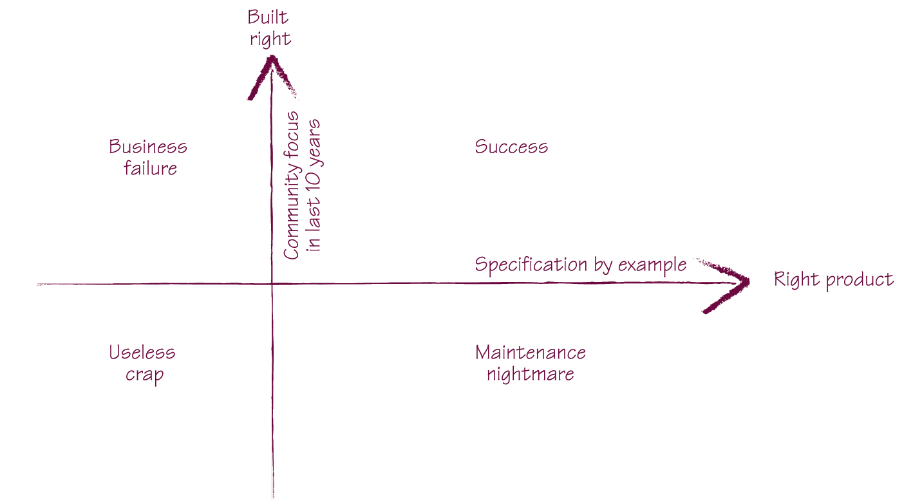

Specification by Example¶
Specification by Example is a set of process patterns that helps teams build the right software product. With Specification by Example, teams write just enough documentation to facilitate change effectively in short iterations (Scrum or XP) or in flow-based development (Kanban).
Introduction¶
“The hardest single part of building a software system is deciding precisely what to build.”
– The Mythical Man-Month
“The formulation of a problem is often more essential than its solution.”
– Albert Einstein
Specification by Example is to address the above questions.
Besides that, Specification by Example also ensure documentation agile teams need to build is:
- Precise and objectively testable
- Easy to maintain
- Written just-in-time
What is a specification¶
A specification should be
- Precise and testable
- A true specification, not a script
- About business functionality, not about software design
Once the functionality is implemented, the specification that describes it will serve a different purpose. It will document what the system does and alert us about functional regression.
To be effective in these goals, a specification should be
- Self explanatory
- Focused
- In domain language
An example of a very good specification with examples is shown here. Free delivery
- Free delivery is offered to VIP customers once they purchase a certain number of books.
- Free delivery is not offered to regular customers or VIP customers buying anything else than books.
- Given that the minimum number of books to get free delivery is five, then we expect the following:
Difference from user stories¶
User stories generally have three parts: “As a __ I want __ in order to __ .” Alternative formats exist, but all have these three components.
As a process, Specification by Example works both for high-level and lower-level stories. Once we have a high-level example of how something would be useful, we can capture that as a high-level specification. Such high-level examples allow us to objectively measure whether we’ve delivered a feature.
User stories have to fit into the sprint. When there is a bunch of those that are done, they’re tested in isolation. The larger user story isn’t actually tested. When the user stories are small grained you can’t really tell from the backlog whether things are really done.
Difference from scripts¶
A specification does not say anything about application workflow or session constraints.
A script explains how something can be tested. It describes business functionality through lower-level interactions with a system. A script requires the reader to work back from the actions and understand what’s really important and what exactly is being illustrated. Scripts also bake the test into workflow and session constraints, which might change in the future even when the underlying business rules don’t change.
A specification explains what the system does. It focuses on the business functionality in the most direct way possible. Specifications are shorter because they describe the business concepts directly. That makes them easier to read and understand than scripts. Specifications are also a lot more stable than scripts, because they won’t be affected by changes in workflow and session constraints.
Watch out for descriptions of flows (first do this, then do that, ...). Unless specifying a genuine process flow, this is often a sign that a business rule is illustrated using a script. Such scripts will cause a lot of long-term maintenance problems.
The specification should explain what should it do rather than how should it work.
Difference from software design¶
Ideally, a specification should not imply software design. It should explain the business functionality without prescribing how it’s going to be implemented in software.
This serves two purposes:
- It allows developers to find the best possible solution now.
- It allows developers to improve the design in the future.
Specifications that focus on business functionality, without describing the implementation, enable the implementation to change more easily. A specification that does not say anything about software design won’t need to change when the design improves.
Key process patterns¶
The key process patterns of Specification by Example are:
- Deriving scope from goals
- Specifying collaboratively
- Illustrating specifications using examples
- Refining the specifications
- Automating validation without changing the specifications
- Validating the system frequently
- Evolving living documentation.
Deriving scope from goals¶
Feature Injection
It’s a popular name for extracting the scope of a project from the business goals. And it is a technique to iteratively derive scope from goals through high-level examples.
Effect mapping
A visualization technique for project scope through hierarchical analysis of goals, stakeholders, and features.
User story mapping
A hierarchical mapping technique for user stories that provides a “big picture” view.
Specifying collaboratively¶
Everyone in the team should be involved in Specification by Example.
Specifying collaboratively is a great way to build a shared understanding of what needs to be done and to ensure that different aspects of a system are covered by the specifications. Collaboration also helps teams produce specifications that are easy to understand and tests that are easy to maintain.
Have team members review stories early
When: Analysts/domain experts are a bottleneck
A “cell” consisting of two developers and a tester reviews each story early on to prepare for the meeting with the product owner, identifying any open questions.
- Specification by Example relies heavily on collaboration between business users and delivery team members.
- Everyone on the delivery team shares the responsibility for the right specifications. Programmers and testers have to offer input about the technical implementation and the validation aspects.
- Most teams collaborate on specifications in two phases: Someone works up front to prepare initial examples for a feature, and then those who have a stake in the feature discuss it, adding examples to clarify or complete the specification.
- The balance between the work done in preparation and the work done during collaboration depends on several factors: the maturity of the product, the level of domain knowledge in the delivery team, typical change request complexity, process bottlenecks, and availability of business users.
There are many different ways to collaborate
Many teams found that, at the start, big workshops were useful as a means to transfer the domain knowledge and align the expectations of developers, testers, and business analysts and stakeholders. But the majority of teams stopped doing big workshops after a while because they discovered that they’re hard to coordinate and cost too much in terms of people’s time.
Another approach is to run smaller workshops that involve one developer, one tester, and one business analyst. A popular name for such meetings is Three Amigos.
Or let someone in the team works on specification alone first. To check if a specification is self-explanatory, get someone else to look at the document and try to understand it, without you saying a word about it.
Collaborate on defining the language
When: Choosing not to run specification workshops
If you decide not to run big workshops and instead use one of the alternative approaches, make sure to collaborate on defining the language.
Illustrating specifications using examples¶
Examples are a good tool for avoiding communication problems, which is a very effective way to communicate domain knowledge and ensure a shared understanding.
Because examples are concrete and unambiguous, they’re an ideal tool for making requirements precise. This is why we use them to clarify meaning in everyday communication, and use them consistently in analysis, development, and testing.
A specification that defines three key examples properly is much more useful than one that specifies a hundred examples poorly.
- A representative example illustrating each important aspect of business functionality. Business users, analysts, or customers will typically define these.
- An example illustrating each important technical edge case, such as technical boundary conditions. Developers will typically suggest such examples when they’re concerned about functional gaps or inconsistencies. Business users, analysts, or customers will define the correct expected behavior.
- An example illustrating each particularly troublesome area of the expected implementation, such as cases that caused bugs in the past and boundary conditions that might not be explicitly illustrated by previous examples. Testers will typically suggest these, and business users, analysts, or customers will define the correct behavior.
Avoid using abstract classes of equivalence
When: You can specify a concrete example
Classes of values have to be translated into something concrete for automation, which means that whoever automates the validations will have to translate the specifications into automation code. This means more opportunities for misunderstanding and misinterpretation. We should have enough examples to describe the entire scope of a feature
Refining the specifications¶
Collaboration on refining the specification/requirements builds trust between stakeholders and delivery team members.
And collaboration requires preparation
- For teams who worked on projects where the requirements were vague and required a lot of upfront analysis, the preparation phase started two weeks before the collaborative workshop.
- This allowed analysts to talk to business users, collect examples from them, and start refining the examples.
- Teams that had more stable requirements started working on examples a few days before, collecting the obvious open questions and addressing them.
- All these approaches help to run a bigger workshop more efficiently.
Automating validation without changing the specifications¶
Use “Given-When-Then” language in specifications
In order to: Make the test easier to understand
As a rule of thumb, a specification should declare the context, specify a single action, and then define the expected post-conditions. (Or Arrange-Act-Assert)
When deciding whether to automate the validation of specifications using a technical tool or one for executable specifications, think about which benefits you want to get out of it. If we automate examples with a technical tool, we get easier automation and cheaper maintenance but lose the ability to use them for communication with business users later. We get very good regression tests, but the specifications will be accessible only to developers. Depending on your context, this might or might not be acceptable.
Don’t check business logic through the user interface
Automating just below the skin of the application is a good way to reuse real business flows and avoid duplication in the automation layer. Executing the checks directly using HTTP calls, not through a browser. Speeds up validation significantly and makes it possible to run checks in parallel.
Validating the system frequently¶
Automate and include validating in the continuous integration process.
Don’t postpone or delegate automation
Because of the automation overhead, some teams delayed it. They described specifications with examples and then wrote code, leaving the automation for later.
Evolving living documentation¶
Long-term value comes from living documentation
Use test-driven development as a stepping stone
When: Developers have a good understanding of TDD
Explain Specification by Example as the process of gathering examples to clarify requirements, deriving tests, and automating them. Our focus is on collaboration and process change rather than tool. Keep executable specifications in a version control system.
Don’t treat automation code as second-grade code
What typically happens on projects is they put a junior programmer to write the tests and the test system. However, automated test systems are difficult to get right. Junior programmers tend to choose the wrong approximations and build something less reliable. Put your best architects on it. They have the power to say: if we change this in our design, it will make it much better and easier to get tested.
Good practices¶
Base the specification language on personas
Document your building blocks
It’s good practice to document the building blocks for specifications; this helps people reuse components and keep the language consistent.
Avoid making up your own data
When: Data-driven projects Using real data is important on data-driven projects, when a great deal can depend on slight variations and inconsistencies.
Get precise performance requirements
When: Performance is a key feature
Use a checklist for discussions
When: Cross-cutting concerns
A checklist for discussions will ensure that you begin to consider all the important questions when reviewing a story. You can use it to decide which of the cross-cutting concerns apply to a particular story and then focus on illustrating those aspects.
Avoid writing specifications that are tightly coupled with code
Specifications that are tightly coupled with code and closely reflect the software implementation result in tests that are brittle.
Technical tests are important, and I’m not arguing against having such tests that are closely coupled with the software design. But such tests should not be mixed with executable specifications. A common mistake for teams starting with Specification by Example is to drop all technical tests, such as the ones at the unit or integration level, and expect that executable specifications will cover all aspects of the system.
Executable specifications guide us in delivering the right business functionality. Technical tests ensure that we look at low-level technical quality aspects of the system. We need both, but we should not mix them.
Technical test automation tools are much better suited for technical tests than the tools we use to automate executable specifications. They’ll enable the team to maintain such tests much easier.
To learn about tools, try a simple project first
When: Working on a legacy system
Avoid recorded UI tests
Many traditional test automation tools offer record-and-replay user interface automation. Although this sounds compelling for initial automation, record-and-replay is a terrible choice for Specification by Example. This is one of the areas where automation of executable specifications is quite different than traditional automated regression testing.
Avoid recording user interface automation if you can. Apart from being almost impossible to understand, recorded scripts are difficult to maintain. They reduce the cost of creating a script but significantly increase the cost of maintenance.
Specifications should be described at the business rule level. The automation layer should handle the workflow level by combining blocks composed at the technical activity level. Such tests will be easy to understand, efficient to write, and relatively inexpensive to maintain.
- Refined specifications should be automated with as little change as possible.
- The automation layer should define how something is tested; specifications should define what is to be tested.
- Use the automation layer to translate between the business language and user interface concepts, APIs, and databases. Create higher-level reusable components for specifications.
- Automate below the user interface if possible.
- Don’t rely too much on existing data if you don’t have to.
- Validate executable specifications frequently to keep them reliable.
- Compared to continuous integration with unit tests, the two main challenges for continuous validation are fast feedback and stability.
- Set up an isolated environment for continuous validation and fully automate deployments to make it more reliable.
- Look for ways to get faster feedback. Split quick and slow tests, create a pack for current iteration specifications, and divide long-running packs of executable specifications into smaller packs.
- Don’t just disable failing tests—either fix the problems or move the tests to a pack for low-priority regression issues that’s closely monitored.
Organize current work by stories, Reorganize stories by functional areas
User stories are excellent as a planning tool, but they aren’t useful as a way to organize existing system functionality.
Written by Binwei@Gdynia